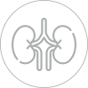

Fortis Hospitals
FMRI
One of the leading health care centers of Fortis is in Gurgaon. Fortis hospital Gurgaon is Set up over 11 acres, with a provision of 1000 beds. The Fortis Memorial Research Institute (F.M.R.I.) is quaternary care and multi-specialty hospital. F.M.R.I. focuses on Talent, Technology, Infrastructure, and Service as its four main pillars of delivering healthcare, and F.M.R.I. aims to be the "Mecca of Healthcare. Its centers of excellence include Cardiac Sciences, Neurosciences, Emergency & Trauma, Bone & Joint, Renal Sciences, Gastro Sciences, Critical Care, and Organ Transplants. It has introduced the world's first digital broadband, M.R.I.- Digital M.FMRIR.I.
Fortis-Bangalore
Apollo Hospitals, Bengaluru is a leading, highly specialized medical care unit of the Apollo hospitals group. It has made its name in Bengaluru and is ranked in 20th position. It is a 250 bedded hospital, beautifully remodeled over an area of 2,12,000 sq ft. The hospital is prepared with state-of-the-art technology making it a hub of healthcare in Bengaluru. Surgeons at the Minimal Access Surgery Center consistently use these techniques in t all surgeries such as Cardiac Surgery, Pediatric Surgery, General & Gastrointestinal Surgery, Gynecology, Thoracic surgery, Urology, Cancer surgery, Orthopedics, Neurosurgery, and Ear, Nose & Throat surgery.
Speciality
-
Cardiology
Fortis Escorts Heart institute is the pioneer of heart care in India. The institute has consistently being ranked as the top hospital in India consistently over the years by researches conducted by various media and research companies including The Week - Nielsen, The Times of India and others. The institute is constantly able to attract the top talent (team of Doctors and support staff), and latest technology owing to its 'best in class in cardiology'.
-
Orthopaedics & Joint Replacement
The Orthopaedic and Joint Replacement department specialises in arthroscopy, dealing with trauma recovery, spinal injuries and complicated joint replacement, are performed here to make sure that you derive maximum bone and joint health under our care. With an efficient line-up of leading orthopaedic doctors from around the country, we offer dedicated treatments in all minor and major osteoarthritic issues. One of our leading treatment modules includes platelet-rich plasma transfusion for patients with osteoarthritis. Our treatments involve minimally invasive surgeries for trauma recovery or even bone
-
Neurosurgery & Spine Surgery
Neuro sciences is amongst the fastest developing fields in medical care, with many advancements coming each year. This means that patients need to be at a hospital, which has the best of latest technology and the medical team comprising of Doctors and support staff. Being the flagship hospital of the largest chain of hospitals in India, FMRI hosts the latest in technology and the most renowned faculty in all streams of Neuro sciences. Fortis is the largest chain of hospitals in India, comprising of 27 hospitals, over 10,000 beds, FMRI (Fortis Memorial Research institute at Gurgaon) being the flagship and the most modern, is always a step ahead in adopting the most modern and successful techniques in treating neuro medical problem.

-
Oncology
The Department of Oncology has a comprehensive cancer care programme that follows trans-disciplinary and multi-modality approach in the field of adult and paediatric oncology. The department has an extensive medical programme, with super-sub-specialists in the field of Medical Oncology, Haematology - adult & paediatric, Radiation Oncology, Specialised Onco surgery and Bone Marrow Transplant services. There are various specialised clinics and with a range of Support services for prevention, diagnosis and treatment of Cancer. The focus of the cancer treatment has been on conservation of the involved organ as much as possible.
- 
-
Transplant
Fortis has one of the largest and most comprehensive organ transplant programmes in India. The institute offers a host of state-of-the-art services which include transplants of liver, kidney and heart, intestinal and GI transplants, and transplant services. The hospital provides excellent medical care and facilities for pre and post-transplant management.
Our Doctors
Team of Cardiologist
Dr. Z S Meharwal
Executive Director – Cardiac Sciences
MBBS, M.Ch (Cardiothoracic Surgery), MS, MNAMS
Dr. Meharwal has worked as a Consultant Cardiac Surgeon in London at the prestigious King's College Hospital. His experience in cardiac surgery exceeds 30 years, and he has over 30000 surgeries to his credit, including complex heart operations. He is a leader in various new cardiac operations in the country. He works as Programme Director of D.N.B. Cardiothoracic Surgery at F.E.H.I. He has trained cardiac surgeons in India and abroad who are now independent at different centers.
- Minimally Invasive Cardiac Surgery
- Off-pump coronary artery bypass surgery
- Surgery of ascending aortic aneurysms
- Valve repair and replacement
- CABG in patients with poor ventricular function
- Major Vascular surgery
know more
Dr. Nikhil Kumar
25+ Years Of Experience
Director of Cardiology Fortis Memorial Research Institute, Gurgaon
MD (Medicine), DM (Cardiology) is an all-round Cardiologist with extensive experience in Interventional, Non-invasive and Preventive and Clchrcal Cardiology.
He is an accomplished Cardiologist with extensive experience in Interventional Cardiology, Non-invasive, Preventive, and Clinical Cardiology. He has previously worked as H.O.D. of Cardiology at Army Hospital Research and Referral and as Director-Cardiology at Metro Group of Hospitals, New Delhi. He has expertise in Complex Coronary Angioplasty, including Rotational Atherectomy, Valvuloplasty, Device Closure of Shunt Lesions, Pacemaker, and A.I.C.D. implantations, Cardiac Resynchronisation Therapy, and Renal, Peripheral, and Carotid Angioplasty and Stenting.

Dr. Udgeath Dhir
Director & Head - Cardiothoracic and Vascular Surgery (CTVS)
FMRI-Gurgaon MBBS, MS, M.CH (CARDIAC SURGERY)
He has extensive experience of over 14 years in the field of cardiology. He has performed around 7500 operations in the last 11 years, including a large number of bypass surgeries. He worked as a Senior Consultant in Cardiology at Medanta, The Medicity, Gurugram.
- Total arterial bypass surgery
- Minimally invasive valvular, coronary and congenital heart surgery
- Ventricular-assisting devices
- Cardiac Transplantation
- Arrhythmia surgery
Memberships:
- Member of International Society of minimally invasive cardiac surgery (I.S.M.I.C.S.)
- International member of the European association of cardiothoracic surgery (E.A.C.T.S.)
- Member of the society of thoracic surgery (S.T.S.)
Know more

Dr. Rakesh Kumar Saklani:
Senior Consultant - Cardiothoracic and Vascular Surgery (CTVS)
FMRI-Gurgaon MBBS, MS (General Surgery), MCH (CTVS)
He is having experience of almost 8 years in the field of cardiac surgery.
- coronary artery bypass grafting
- valvular repair /replacement, aortic, minimal invasive surgeries
- congenital heart diseases
work Experience:
- Consultant, C.T.V.S. – Medanta the Medicity Hospital, Gurgaon (2016 – July 2019)
- Associate Consultant, C.T.V.S. -Medanta the Medicity Hospital, Gurgaon (Aug 2013 - 2016)
- Attending Consultant, C.T.V.S. - Fortis Escort Hospital Amritsar (Jan 2012 – July 2013)
Know more

Dr. Govini Balasubramani:
SENIOR CONSULTANT- CARDIAC SCIENCES/ADULT CTVS
Fortis-Vadapalani,Chennai MBBS, MS, MCh, FACS
He is an accomplished C.T.V.S. and Heart and lung transplant surgeon and specializes in taking care of all aetiologies of heart failure, chronic asthma, and lung disease needing surgery. He has performed over 7000 open and closed heart surgeries and 350 heart and lung transplants.
Dr. Jyotirmaya Dash:
SENIOR CONSULTANT- CARDIAC SCIENCES/INTERVENTIONALCARDIOLOGY
Fortis-Vadapalani, Chennai MBBS, MD - General Medicine, DNB - Cardiology, FESC
Dr. Dash is specialized in treating all types of complex coronary interventions like angioplasties, bifurcation stenting, pacemakers, and TAVI/TAVR. He specializes in imaging techniques like I.V.U.S., OCT, F.F.R., IFR, and other plaque modifying interventions.
Dr. Atul Mathur:
Executive Director – Cardiac Sciences
FEHI-Delhi MBBS, MD (INTERNAL MEDICINE), DM CARDIOLOGY
Dr. AtulMathur is a well-known doctor in Delhi as the Executive Director of Interventional Cardiology and Chief of Cath Lab. He is also the President of the Indian Council for Carotid Interventions and Cardiovascular Therapeutics, India. A pioneer in complex coronary procedures, he specializes in endovascular & Structural Heart Interventions. Various interventional procedures performed for the first time in the country by him are now established elsewhere. A significant contribution to his present profile starts from his training and work experience at the All India Institute of Medical Sciences, Delhi, and the University of Alabama at Birmingham, US.
- In 1999, he performed the first Carotid Stenting Procedure in India
- He used the first Cerebral Protection Device in India in 2002 at Escorts Heart Institute New Delhi.
Know more
Dr. Anil Saxena:
Executive Director – Cardiac Sciences
FEHI-Delhi MBBS, MD, D.N.B.
Dr. Anil Saxena is an internationally recognized expert in Cardiac Pacing and Electrophysiology. Since joining Fortis Escorts Heart Institute in 1989, Dr. Saxena has been actively involved in setting up the department of Cardiac Electrophysiology. He is one of the pathfinders in the implantation of I.C.D. and biventricular pacemakers in India and has vast experience in this field. He has been performing electrophysiological studies for over 25 years and 'Radio Frequency Catheter Ablation for various complex cardiac arrhythmias, with thousands of successful procedures to his credit.
- Electrophysiological Study
- Catheter R.F. Ablation of Complex Arrhythmias
- Implantation of I.C.D.
- Implantation of Biventricular Pacemaker (C.R.T.)
- Implantation of CRT-D (Combo Device)
- Lead Extraction
- Coronary Angioplasty
Know more
Dr. Ritwick Raj Bhuyan:
Director – Cardiac Sciences
FEHI-Delhi MBBS, M.Ch (CTVS), M.S. (General Surgery)
Dr. Ritwick Raj Bhuyan is a Director - Cardiothoracic and Vascular Surgeon at Fortis Escorts Heart Institute with more than 20 years of working experience in high-volume cardiothoracic centers in India and Australia. He has been associated with nearly 30,000 open heart procedures and independently performed about 12,000 complex open-heart procedures. Skills include pre-operative, operative, and postoperative management of adult and pediatric cardiac and thoracic patients with extensive hands-on operating experience.

Dr. S. Radha Krishnan:
Executive Director – Cardiac Sciences
FEHI-Delhi MBBS, MD (MEDICINE), DM CARDIOLOGY
Dr. S Radhakrishnan is an Executive Director of Pediatric Cardiology in the field of congenital and acquired cardiac lesions and has more than 40 years of experience in pediatric cardiology. His area of expertise is in Balloon Valvuloplasties, Cardiac catheterization, Balloon Valvuloplasties, Non- surgical closure of P.D.A. including devices, and Echocardiography. For the first time in India, he started P.D.A. coil closure and the procedure of Balloon dilation of the Arterial Septum.
- Echocardiography: More Than 5000 Cases Including Trans-esophageal and Intraoperative Echocardiography
- Cardiac Catheterisation: More Than 3000 Cases Including Adult Angiographies
Know more
Dr. Aparna Jaswal:
Director – Cardiac Pacing & Electrophysiology
FEHI-Delhi MBBS, MD (MEDICINE), DM CARDIOLOGY
Dr. Aparna Jaswal is a Director of Cardiac Pacing & Electrophysiology, and her area of expertise includes catheter R.F. Ablation of complex arrhythmias, Biventricular Pacing & I.C.D. Implantation. She has been actively involved in the department of Cardiac Electrophysiology since 1998. She has been performing electrophysiological studies & Radio Frequency Catheter Ablation. From St. Luke Hospital, U.S.A., she has received training in Cardiac Electrophysiology. She also has credit for being the first electrophysiologist to start an E.P. program in Mauritius in November 2010.
- Electrophysiology
Know more
Team of Orthopedic Surgeons
Dr. Jayant Arora:
Director & Unit Head - Fortis Bone & Joint Institute
FMRI-Gurgaon MBBS, MS (Orthopedics), DNB (Orthopedics), Fellowship - Joint Replacement and Arthroscopy (Newcastle, UK) MRCS (Edinburgh), CCBST (Royal College of Surgeons, UK)
Dr. Arora has experience of over 20 years in the field of orthopedics. He has performed more than 15,000 surgical procedures during the last 20 years. His areas of interest include - the treatment of knee arthritis and arthroscopic surgery for sports injuries. Work Experience: Chief of Orthopaedic Surgery at Columbia Asia Hospital, Gurgaon (2008 to 2019) Specialist in Orthopaedics (Knee and Hip replacement surgery and Arthroscopy) – Leeds, UK. (2007 to 2008) Clinical Research Fellowship in Joint replacement surgery from Newcastle, U.K. (2005 to 2006) Senior Registrar at Dumfries and Galloway Hospital, Scotland (2004). Woodend Hospital and Glasgow Royal Infirmary in Scotland for Primary and Revision (Re-do) Joint Replacement Surgery (2002 to 2003)
Dr. Subhash Jangid:
Director & Unit Head - Fortis Bone & Joint Institute
FMRI- Gurgaon MBBS, MS(AIIMS) (Orthopaedics), DNB (Orthopaedics), MNAMS, M.Ch
M.B.B.S., MS(A.I.I.M.S.) (Orthopaedics), D.N.B. (Orthopaedics), M.N.A.M.S., M.Ch He is orthopedic with extensive experience of more than 20 years in his field. He has performed more than 6500 joint replacement surgeries till date. He is an experienced joint replacement surgeon in the computer navigation technique in the world.
- He was Head, Orthopaedics and Joint Reconstruction, Artemis Hospital, Gurgaon
- Head, Joint Reconstruction, Fortis Shalimar Bagh, Delhi
- Senior Consultant, Joint Reconstruction, Primus Hospital, New Delhi
- Assistant Professor, Orthopaedics, S.N. Medical College, Jodhpur
- Partial knee replacement
- Primary hip replacement
- Revision hip and knee replacement
- ACL/PCL reconstruction
- Meniscus repair surgery
- Surgery for shoulder dislocation
- Rotator cuff surgery
- Acetabulum and Pelvic trauma
- Complex limb trauma
know more
Dr. Manoj Padman:
Director - PaediatricOrthopaedics, Fortis Bone & Joint Institute
FMRI- Gurgaon MBBS, MS Orth, DNB Orth, MSc Research (UK)
He is a specialist in Paediatric Orthopedics with experience of more than 20 years in his field. He deals with all the disorders affecting the musculoskeletal system of children and adolescents. Work Experience: Director, Paediatric Orthopaedics, Rainbow Children's Hospital & Max Healthcare Senior Consultant Paediatric Orthopaedic Surgeon, Max Healthcare, New Delhi National Fellow & Consultant in Paediatric Orthopaedics & Trauma Surgery, Sheffield Children's Hospital, U.K.
- Hip pathologies
- Neuromuscular pathologies
- Deformity correction
- Limb reconstruction
- Paediatric Orthopedic Trauma
know more
Dr. Somesh Virmani:
Senior Consultant - PaediatricOrthopaedics, Fortis Bone & Joint Institute
MBBS, DNB, MNAMS (Orthopaedics) Fellowship in PaediatricsOrthopaedics (CMC, Vellore & MGR University)
- Consultant, Paediatric Orthopaedics, Artemis Hospital, Gurgaon
- Vising Consultant, Paediatric Orthopaedics, Holy Family Hospital, New
- Assistant Professor, Orthopaedics, Meenakshi Medical College, Kanchipuram, Tamilnadu
- Clubfoot (C.T.E.V.)
- Cerebral Palsy.
- Congenital dislocation of Hip (D.D.H.)
- Congenital anomalies
- Hip Preservation
- Foot and ankle disorders in children as Flat feet etc.
know more
Dr. KarthiSundarVellaiputhiyavan:
CONSULTANT ORTHOPAEDICS
Fortis-Vadapalani,Chennai MBBS, DNB Ortho, D Ortho, MNAMS, Tissue Banking (Sing), MCh Ortho (UK),Reg. Ortho Spine (Vellore), Fellow in Arthroscopy & Sports Surgery (Sing), Fellow in Hip Arthroscopy (Spain)
He is an Orthopaedics, Arthroscopy, and Sports Injury Specialist specializing in keyhole Arthroscopic surgical treatment of the knee, shoulder, ankle, hip & elbow joints pathologies.
- Knee instability
- Shoulder dislocation, rotator-cuff dislocation, frozen shoulder
- Ankle
- Tennis elbow
- Cartilage restoration- cartilage transplantation
- Patella instability
- Tendon overuse syndromes
know more
Dr. Mohan Ganesan:
SENIOR CONSULTANT ORTHOPAEDICS
Fortis-Vadapalani,Chennai MBBS, MS Orthopaedic Surgery
Dr. Mohan Ganesan is a specialist in revision replacement surgery, elderly joint replacements, and arthritis.

Dr. Gokulraj Dhanarajan:
SENIOR CONSULTANT ORTHOPAEDICS
Fortis-Vadapalani,Chennai MBBS, MS Orthopaedics
He is working as Head of the Department of Orthopaedics. His areas of specialization include knee replacement surgery, minimally invasive hip replacement surgery, osteoarthritis, and skeletal injuries.
Team of Neurosurgeons
Dr. Praveen Gupta:
Principal Director – Neurology(FMRI-Gurgaon)
MBBS, MD (Medicine), DM (Neurology)
He is a neurologist with almost two decades of experience in the field of neurology. He has previously worked with Paras Hospital and Artemis hospital as a Senior consultant in neurology. He is the one who started the first stroke center in the Gurugram region.
- Headache
- Parkinson's Disease
- Migraine
- Epilepsy
- Stroke Rehabilitation
know more
Dr. Rana Patir
23+ Years Of Experience
Director - Department of Neurosurgery Fortis Memorial Research Institute, Gurgaon
Dr. Patir is one of the famous neurosurgeons in our country, with a clinical experience of more than two decades in his field. He is amongst the best neuro and spine surgeons with a record of performing more than 10,000 neurosurgical procedures.
- Director, Neurosurgery at Max Healthcare
- Head, Department of Neurosurgery at Sir Ganga Ram Hospital, New Delhi
- Registrar, Regional Neurosciences Centre, New Castle up to Tyne
- Epilepsy Surgery
- Pediatric Neurosurgery
- Skull Base Surgery
- Neurovascular Surgery
- Minimal Invasive Brain and Spine Surgery.
know more
Dr. Sandeep Vaishya:
HOD & Executive Director – Neurosurgery (FMRI-Gurgaon)
MBBS, MS (General Surgery), MCh (Neurosurgery), Sundt Fellowship (USA)
Dr. Vaishya is a famous name in the field of Neurology with experience of more than 22 years in this field. He has worked in the Department of Neurosurgery at A.I.I.M.S. as a faculty for 10 years. He has also worked as Head of Department- Neurosurgery at Max Super Speciality Hospital, Saket, New Delhi.
- Intracranial Tumor Surgery
- Spinal Surgery & Minimal invasive spinal Surgery
- Stereotactic Radiosurgery
- Peripheral Nerve Surgery with a special interest in Brachial Plexus Injuries
know more

Dr. Pravina Jesuraj:
ASSOCIATE CONSULTANT NEUROLOGY
Fortis-Vadapalani,Chennai MBBS, DNB - General Medicine, DNB – Neurology
She is a neurologist with vast experience with patients as young as newborns up to above 80 years of age. She has vast experience in treating conditions such as Stroke, Epilepsy, multiple sclerosis, and muscle diseases.
Dr. Debashis Chakraborty
DIRECTOR NEUROLOGY
Fortis Hospital Anandapur, Kolkata
Dr. Debashis Chakraborty is an expert in General Neurology and an eminent neurologist, specifically dementia and other memory-related disorders, having experience of 20 years. Dr. Chakraborty completed his D.N.B. in Neurology from Sir Gangaram Hospital, New Delhi; after completing his post-graduation in General Medicine from M.G.M. Medical College, Indore, and worked at The National Hospital for Neurology and Neurosurgery, Queen Square, London, in Cognitive and Behavioural Neurology. After that, he completed his M.R.C.P. in the U.K. and returned to India as a Senior Research Associate at Bangur Institute of Neurosciences, Kolkata. Dr. Chakraborty is an expert in General Neurology, specifically in dementia and other memory-related disorders. He has attained Scholarships during M.B.B.S. and M.D.

Team of Oncologist

Dr. Vinod Raina:
Chairman - Medical Oncology
MBBS, MD (AIIMS), MRCP (UK), FRCP (Edinburgh and London) FMRI-Gurgaon
He is a renowned medical oncologist with an experience of more than 40 years in the field of oncology. He has performed around 400 bone marrow/stem cell transplants till date.
- Breast Cancer
- Lung Cancer
- G.I. Malignancies
- Genitourinary Cancer
- Gynecological malignancies
- Lymphoma and Bone Marrow
know more
Dr. Mukesh Patekar:
Senior Consultant - Medical Oncology
MBBS, MD (Medicine), AIIMS, New Delhi DM (Medical Oncology), AIIMS, New Delhi FMRI-Gurgaon
He is an oncologist with experience of 9 years in the field of medical oncology.
- Cancer immunotherapy
- Breast cancer
- G.I. malignancies
- Lung cancer
- Multiple myeloma, Lymphoma, Leukaemia
- Pediatric solid tumor
- Pain and palliative care
know more

Dr. Suman S Karanth:
Consultant - Medical Oncology
MBBS, MD (Internal Medicine), DNB (Medical Oncology) FMRI-Gurgaon
She is a medical oncologist with experience of 7 years in the field of oncology.
- Immunotherapy
- Solid malignancy management- Neuro-oncology and G.I. oncology
know more
Dr. Raghav Kesri:
Associate Consultant - Medical Oncology
MBBS; MD; DrNB (Medical Oncology) FMRI-Gurgaon
He is an oncologist with experience of 10 years in the field of medicine and oncology. He is an expert in administering immunotherapy, targeted therapy, chemotherapy, delivering H.I.P.E.C., and intrathecal chemotherapy.
- All Solid Organ and hematological malignancies
- Head and neck cancer
- Lung Cancer
- G.I. Malignancies
- Breast Cancer
- Genitourinary Malignancies
- Gynecological Malignancies
- Lymphomas, Leukemia
know more
Dr. Suhas Kirti Singla:
Associate Consultant - Medical Oncology
M.B.B.S, MD, DNB FMRI-Gurgaon
He is an oncologist with experience of over 12 years in the field of medicine and oncology. He is an expert in administering all types of chemotherapy, hormonal therapy, and palliative care.
- Immunotherapy
- Targeted Therapy
- Solid Organ malignancies
- Head and Neck cancers
- Lung and Thoracic cancers
- Breast Cancer
- Gastro-intestinal cancer
- Gynecological cancer
- Soft tissue and bone Sarcoma
- Hematological malignancies
- Lymphoma and leukemia
- Multiple Myeloma
know more
Dr. Ankur Bahl:
Senior Director - Medical Oncology
MBBS, MD (Medicine), DM (Medical Oncology) FMRI-Gurgaon
He is an oncologist with experience of over 14 years in the field of medicine and oncology. He is an oncologist with clinical expertise in administering all types of chemotherapy, hormonal therapy, immunotherapy, and palliative care.
- Immuno-Oncology
- Hematological Malignancies
- Gastrointestinal and Gynecological tumors
- Head and Neck tumors, Breast Cancer, and lung cancer
- Palliative and pain treatment
know more
Team of Transplant Surgeons
Dr. Vivek Vij
17+ Years Of Experience
Director Fortis Hospital, Noida
Dr. Vivek Vij is a pioneering liver transplant surgeon credited with developing living donor surgery and standardising safety protocols to achieve a 100% donor safety profile since the time of its inception in the country. He is the first surgeon from the Indian subcontinent to publish a series of laparoscopic Donor Hepatectomy in 'Liver Transplantation'. He is the founder of Liver transplantation and Hepatobiliary Sciences in Fortis group of Hospitals, starting a highly successful liver transplant programme initially at its Noida centre and then at Mohali. Dr. Vij and his team has a cumulative experience of performing more than 2500 liver transplants, having performed majority of them at Fortis Hospital, Noida with a record 95% patient and 100% donor success rate. Dr. Vij has to his credit the Lowest Biliary Complication rate (<4%) in Living Donor Liver Transplant (LDLT) worldwide.
- Roche Preceptorship, University of Alabama, Birmingham, USA
- International Liver Transplant Society (ILTS), Chicago
- Indraprastha Apollo Hospitals
- Sir Ganga Ram Hospital
- Fortis Hospital, Mohali
- Rajendra Hospital & Medical Collage, Patiala
- B.J.M.C, Pune
know more
Dr. Anupam Saha
27+ Years Of Experience
Director, Liver Transplant & Hepato-Pancreato Billary and GI surgery - Fortis La Femme, Greater Kailash, Fortis Memorial Research Institute, Gurgaon
Dr. Anupam Saha is the Head of the Department of Liver Transplantation at the Fortis Memorial Research Institute, Gurgaon. He received his training in liver transplantation at the Kings College Hospital, London and thereafter, pioneered liver transplantation in the Indian Armed Forces, among both living donors as well as deceased donor liver transplantation.
He has the experience of over 250 liver transplantations involving both, adults as well as paediatric patients. He also has more than 17 years of experience in performing complex Hepatic, Pancreato- Biliary, as well as Gastro Intestinal Surgeries.
know more
Patient Service at Fortis Hospital
by
Personalised Assistance
Our teams comprise of travel professionals & doctors. Each provides a personalized care to our patients. This ensures the highest quality of care is given at a pace the patient is comfortable with & improves overall healthcare experience.
Save Time & Money
We understand the criticality of time in healthcare. Our protocols & teams are well designed to handle emergencies & planned treatments. We save our patient’s precious time & money at all steps of travel & treatment.
Comprehensive Care
End-to-End care from initial Opinion & Cost Estimates form best 5 hospitals, visa-related, flights, airport pick-up, guest house, food, kitchen, local transport, SIM card, wi-fi, doctors meetings, hospital admission, discharge, follow up, drop back to airport.
About Fortis Hospitals
Fortis Healthcare Limited is a leading integrated healthcare
delivery service provider in India. The healthcare verticals
of the company primarily comprise hospitals, diagnostics and
day care specialty facilities. Currently, the company operates
its healthcare delivery services in India, Dubai, Mauritius
and Sri Lanka with 43 healthcare facilities (including
projects under development), approximately 9,000 potential
beds and 392 diagnostic centres.
In a global study of the 30 most technologically advanced
hospitals in the world, its flagship, the Fortis Memorial
Research Institute’ (FMRI), was ranked No.2, by
‘topmastersinhealthcare.com, and placed ahead of many other
outstanding medical institutions in the world.